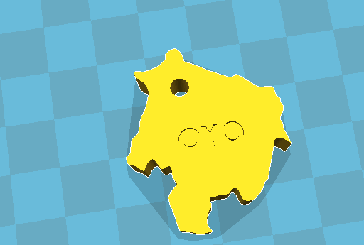
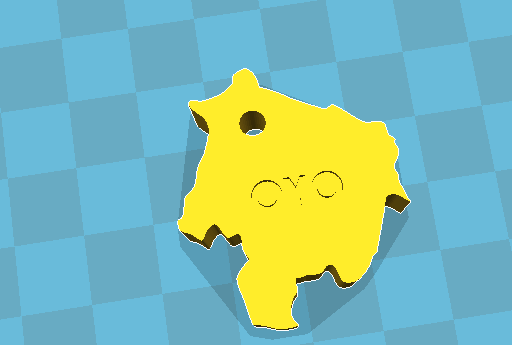
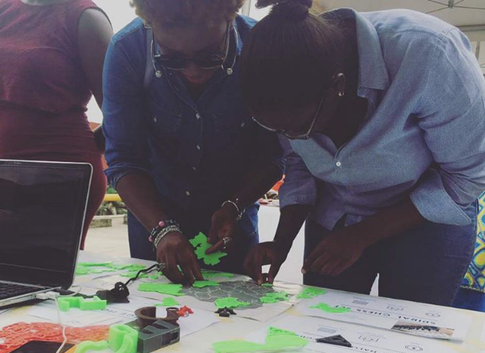
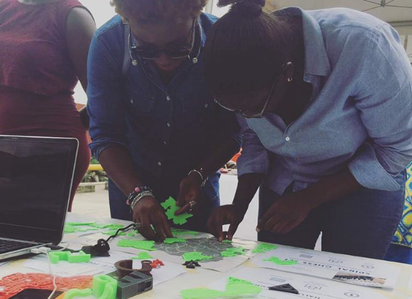

Games had always excited me. And I had an idea to build an educational game to learn about the Nigerian states. Nigeria has 36 states (and a federal territory) and most people I had met had only been to about 8.
In primary school (and some secondary), I remember we had Geography classes which required us to draw some of these states. Now, as a 24 year old, I had forgotten most of them. I decided to design a game based on identifying the states and placing them in order within a time period.

To start, I had to find a map of Nigeria that was useful and without the rivers that go across the country. After this was done, I outlined a number of states and 3D printed them - in order to determine fit.
 

At this point, I only put the names behind the states so that I could remember, but I quickly saw that this could help anyone play the game too. When I determined the fit that was good enough, I modelled the rest of the states and 3D printed them.
To play a board game, one needs a board so I printed a map to the same scale as I had printed and annotated the graph with the names of the states. I asked someone to try it and I felt the time to play the game was too fast.
So, I changed the names behind the state shapes to numbers, and numbered the states on the guide board. With this, I tested the game with a number of people at a Christmas fair.

 

I got the chance to observe people playing the game and saw a problem with the game that I would not have seen otherwise: because the shapes were new to people they could not often tell the top from the bottom.
When a client asked me to create two maps for her, (one of Nigeria and the other of Africa - shown below) I fixed this with different colours for the top and bottom.
Tools: Inkscape, OpenSCAD, Netfabb, Cura, 3D Printer.